Рассмотрим ситуацию когда у нас страница разделена вот по такому принципу
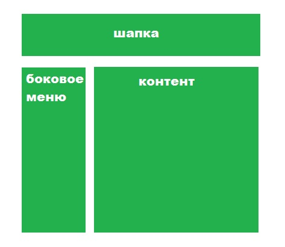Бокове меню у нас содержит ссылки на разделы нашего приложения. Т.к. у нас SPA (single page application) то мы хотим что бы при нажатии на ссылку в боковом меню содержимое блокас контентом менялось на содержимое выбранного раздела. Делается это при помощи роутинга
Route - это пакет, который не входит в состав CRA (create react application). Что бы дополнительно его установить необходимо в терминате выполнить вот такую команду:
npm install react-router-dom -saveДля сего нужен -save? Что бы в файле package.json прописались зависимости. Что это нам дает? В случае если из репозитория мы склонируем наше приложение оно не запустится без необходимых пакетов из папки node_modules. Эти модулы как раз и прописываются в package.json в качестве зависимостей. Все что нам нужно будет сделать - это ввести команду:
npm installи все необходимы пакеты (зависимости) подгрузятся автоматом
После того как пакет установился нам нужно в компоненте где мы хотим использовать роутинг прописать импорт:
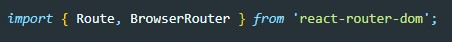Здесь мы импортируем два компонента которые экспортированы не по дефолту. Для чего они нужны?
BrowserRouter - в этот тег мы должны обернуть весь наш JSX код, иначе работать роутинг не будет. Вот как это должно выглядеть:
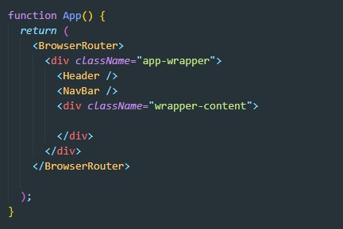Теперь обратим внимание на то как мы прописали ссылки в NavBar (это те ссылки по кликам которых будет менятся содержимое блока с контентом). Вот как это выглядит:
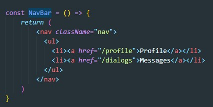Что здесь особенного? мы тут в отрибуте href прописали путь в виде /path. Ссылка которая должна вести на диалоги получила путь "/dialogs" и т.д.
Теперь вернемся в наш главный файл App.js. Здесь в раздел wrapper-content мы помещаем столько компонентов Route сколько у нас будет разделов. Вот как это выглядит:
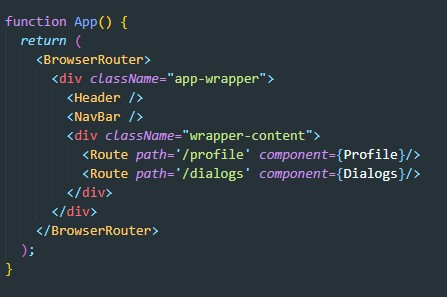У компонента Route есть два атрибута:
path - это тот самый путь который мы указали у ссылок
component - в этом атрибуте вы указываем имя компоненты которая будет загружаться при клике по ссылке. (Важно название компоненты мы указываем в фигурных скобках )
Теперь нам надо сделать так, что бы при клике по ссылке страница не перезагружалась. Для этого мы будем использовать еще одну компоненту библиотеки react-router-dom - NavLink
Не забываем импортировать эту компоненту
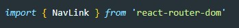Теперь в JSX разметке мы все ссылки (тег a) меняем на тег NavLink. А атрибут href мы заменяем на to Вот как это теперь выглядит:
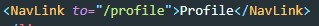Важно подметить что сам react добавляет класс active тем NavLink по которым был произведен клик, НО Если мы используем модульность CSS то не так то просто будет стилизовать NavLink c классом active, т.к. в итоге будет добавлен не active, а абракадабра. Для того что бы решить эту проблему мы должны NavLink добавить еще один атрибут:
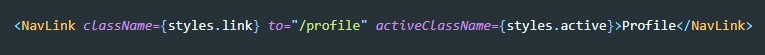activeClassName - здесь указываем имя класса которое будет добавляться активной ссылке, название произвольное, можем назвать как угодно.
Зачем? Если нам необходимо передать props компоненте которую мы указываем в Route, то мы должны использовать вот такой метод:
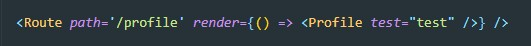Здесь вместо атрибута component мы используем атрибут render, в который поместили callback функцию (анонимную) которая возвращает нам ту компоненту, которую мы хотим. И вот уже это компоненте мы можем передать props в виде атрибута (атрибут test в примере)
Мы простооборачиваем в тег Route компоненту которую будем отрисовывать. здесь так же мы указываем атрибут path
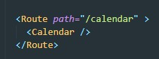Так же мы можем указать строгое равенство пути в URL, для этого Route просто добавляем атрибут exact
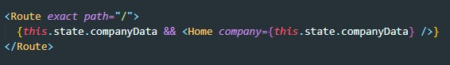т.е. в этом примере компонент будет отрисовываться при дефолтном адресе
Из библиотеки react-router-dom мы можем импортировать как обычный Link так и NavLink. Разница в том что NavLink добавляет класс active той ссылке по которой кликнули.
Что если мы введем в URL адрес который мы не предусмотрели, тогда в компоненте с контентом не отрисуется ни одна компонента. В этом случае мы можем использовать Switch. Switch - компонент оборачивает все наши роуторы и позволяет группировать маршруты и выбирать хотя бы один из тех которые есть внутри. если ни один и маршрутов не отработал, мы можем сделать какой-то общий случай, например выводить страницу с ошибкой или выводить дефолтную страницу. Для этого последним компонентом необходимо указать Redirect и передать ему атрибут to в котором укажем дефолтный URL
Импорт Switch
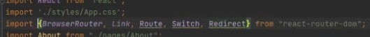Применение
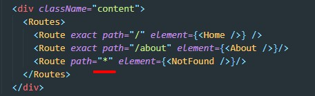